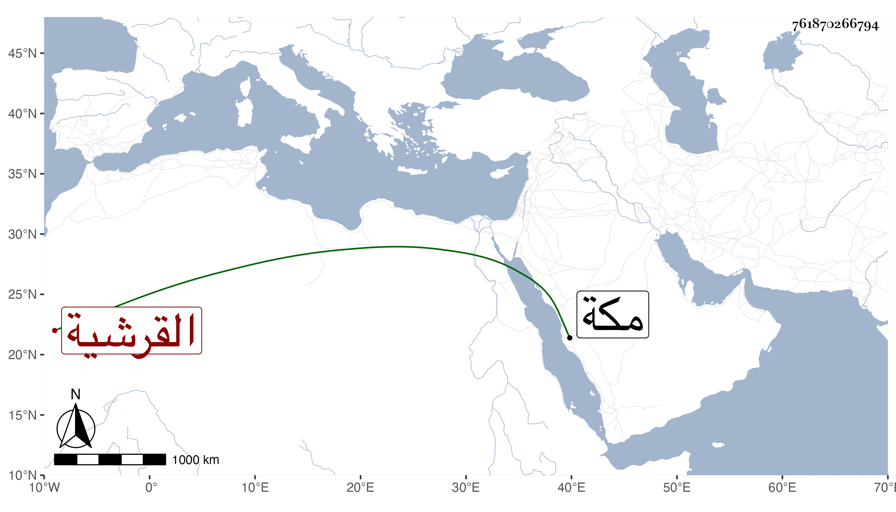

0902Sakhawi.DawLamic.ITO20230111-ara1.EIS1600.761870266794
Biography ID: 761870266794
928
أم كلثوم ابنة أبي الفضل العباس بن أبي المكارم محمد بن أبي البركات محمد بن محمد بن حسين بن علي بن أحمد بن عطية بن ظهيرة القرشية شقيقة العفيف عبد الله وإخوته . ولدت في سلخ جمادى الأول سنة احدى وأربعين وثمانمائة بمكة ، وأجاز لها جماعة منهم زينب ابنة اليافعي وأبو المعالي الصالحي وأبو جعفر بن العجمي .
